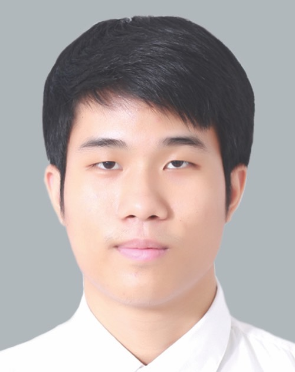

Piriya Thanarotphaisan

Summary
I'm a new graduate looking for a job in technology. I have a little experience, but I am ready to Learning new knowledge and develop skills in various fields. I'm not a smart person, but I never give up on the problems. I encounter or stop improving myself.
Education
Kasetsart University Sriracha Campus (2020 - 2024)
Bachelor of Science Program in Information Technology
GPA: 2.98/4.00
Work Experience
Cooperative education, Mattel Bangkok Limited (Nov 2023 - Apr 2024)
Software Developer - Created automate system and development web application, Reduce processing times by 88% and costs of employ 11,000 USD.
Data Visualization - Created dashboard and summarize big data.
Support Team - Get requirements and system design from users.
Internship, Mattel Bangkok Limited (May 2023 - June 2023)
Learning - Practice using microsoft power platform tools to get the most out of system development.
Get requirements - Collect data from users in each department.
System Design - Planning develop system and database design.
Extracurricular activities & Achievement
CWIE 2024 : Lower Central Region Network, Siam University
Winner outstanding innovation cooperative and work integrated Education (CWIE) Network level lower central region 2024.
Part-time
Waiter at bluelac bar during free time after classroom.
Additional Information
Languages : Thai (Native), English (Fair)
Programming Language : Power FX (Good), C (Basic), Python (Basic), Html5 (Basic)
Computer Skills: Microsoft Power Platform, Microsoft SharePoint, Adobe Premiere pro, Adobe Photoshop
Interests: Video game, Movies, Music
Other
© Piriya Thanarotphaisan. All rights reserved.